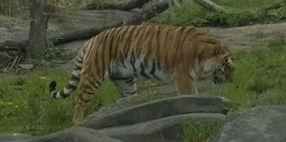
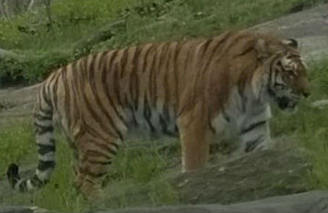
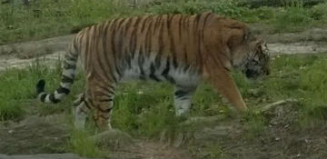
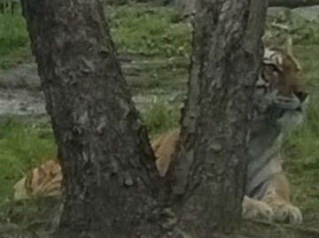

 There are some things we can do to help tiger in the wild. As humans we can be more aware of the products we use that help with rain forest conservation. Catster
 We can donate to many organizations like the World Wildlife Fund, big habitats to kepp our rescued big cat friends home when they are displaced from their original habitats. WWF
 Another step we can take is facilitating awareness on social media. We can also write letters and compile petitions to send our federal legislation. Defenders
 As humans we can also give our time and resources to tigers by volunteering to many programs. Get Involved!